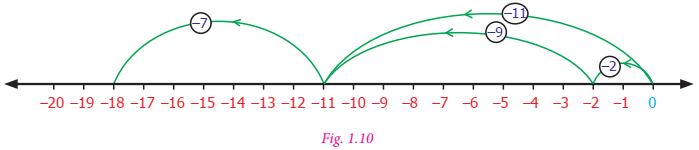

Learning Objectives
To understand the concept of addition and subtraction of integers.
To understand the concept of multiplication and division of integers.
To understand the properties of four fundamental operations applied to integers.
To solve applied problems using the four fundamental operations on integers.
Recap
Integers are the collection of natural numbers, zero and negative numbers.
We denote this collection by zed.
Negative integers are represented on the number line to the left of zero and positive integers to the right of zero.

Every integer on this number line is placed in an increasing order from left to right.
The integers at each point ye, B, C, D in the figure given below are ye equal to plus 3, B equal to plus 7, D equal to minus 1 and C equal to minus 5

Try these
1. Write the following integers in ascending order: minus 5,0,2,4, minus 6,10, minus 10
2. If the integers minus 15,12, minus 17,5, minus 1, minus 5,6 are marked on the number line then the integer on the extreme left is dash
3. Complete the following pattern:
Dash, minus 40,Dash,dash, minus 10,0,dash,20,30,dash,50
4. Compare the given numbers and write less than, greater than”, or Equal to in the boxes.
a) minus 65 Dash 65
b) 0 Dash 1000
c) minus 2018 Dash minus 2018
5.Write the given integers in descending order: minus 27,19,0,12, minus 4, minus 22,47,3, minus 9, minus 35
In class 6, we studied how to compare and arrange integers. Now, let us try to add and subtract integers.
We know 7 minus 5 is equal to 2. But, what is 5 minus 7? Let us try to take away 7 from 5 using the number line As the integers on the number line increases from left to right, we should move to the left of zero to do this subtraction.

Is it really necessary to do this? Have you come across any such situations in life? Yes, there are situations like increase or decrease in temperature, amount deposited and withdrawn from an account, profit and loss in ye business are all instances where integers are involved.

The number line is ye simple tool to visualise addition of integers. Let us do an activity with the number line.
Activity
Imagine that the number line is ye road with markers on it. We are allowed to step forward or backward on this road. One step taken is equal to one unit of number. Initially we start at zero and face positive direction. We step forward for positive integers and backward for negative integers. We maintain the same positive direction for addition operation.

To add (+5) and (minus 3), we start at zero facing positive direction and move five steps forward to represent (+5). Since the operation is addition we maintain the same direction and move three units backward to represent (minus 3). We land at +2. So, (+5) + (minus 3) equal to2 This is shown in figure 1.5.

Proceeding in the same way let us try another example. Find the sum of (minus 6) and (minus 4). We start at zero facing positive direction continuing in the same direction and move 6 units backward to represent (minus 6) and in the same direction move 4 units backward to represent (minus 4). We land at (minus 10).
Therefore, (minus 6) + (minus 4)equal to minus 10
Try this
Find the value of the following using the number line activity:
1) (minus 4) + (+3)
2) (minus 4) + (minus 3)
3) (+4) + (minus 3)
Activity
There are two bowls with tokens of two different colours brown and pink. Let us denote one brown token by (+1) and one pink token by (minus 1). ye pair of tokens, brown (+1) and pink (minus 1), will denote zero [1+( minus 1) equal to 0]

To add two integers, we pick the required number of tokens and form possible zero pairs. The remaining number of tokens left after pairing is the sum of the two integers.

To add (minus 7) and (+5) we pick 7 pink tokens and 5 brown tokens. We form zero pairs from the tokens as above. We can form 5 zero pairs. Then we are left with 2 pink tokens. Hence, minus 7 + plus 5 equal to minus 2

To add (minus 3) and (minus 4) we pick 3 pink tokens first and 4 pink tokens later. The total number of tokens is 7 pink tokens. There are no zero pairs. So, the sum of (minus 3) and (minus 4) is (minus 7). Teacher can give different integers and ask them to add using tokens.
Note
1. When we add two integers of the same sign the sum will also be an integer of the same sign. When we add two integers of different sign, the sum will be the difference between the two integers and have the sign of the integer with greater value.
2. The integer without sign represents positive integer.
Example 1.1
Add the following integers using number line
1) 10 and minus 15
2) minus 7 and minus 9
Solution
Let us add the integers using number line
1) 10 and minus 15

On the number line we first start at zero facing positive direction and move 10 steps forward, reaching 10. Then we move 15 steps backward to represent minus 15 and reach at minus 5. Thus, we get10 + (minus 15)equal to minus 5
2) minus 7 and minus 9

On the number line we first start at zero facing positive direction and move 7 steps backward, reaching minus 7. Then we move 9 steps backward to represent minus 9 and reach at minus 16. Thus, we get (minus 7) + (minus 9) equal to minus 16
Example 1.2
Add
1) (minus 40) and (30)
2) 60 and (minus 50)
Solution
1) (minus 40) and (30)
minus 40+30equal to minus 10
2) 60 and (minus 50)
60+( minus 50) equal to 60 minus 50 equal to 10
Example 1.3
Add
1) (minus 70) and (minus 12)
2) 103 and 39
Solution
1) (minus 70)+( minus 12)
minus 70 minus 12equal to minus 82
2) 103+ 39
103 + 39 equal to142
Example 1.4
ye submarine is at 32 feet below the sea level. Then it moves up 8 feet. Find the depth of the submarine.
Solution
ye submarine is 32 feet below sea level.
Therefore, it is represented by minus 32
Next it moves up 8 feet
Moves above is represented as +8
The depth of the submarine equal to minus 32+8 equal to minus 24
Therefore, the submarine is located at 24 feet below the sea level
Example 1.5
Sita saved Rupees 225.00 and she has spent Rupees 400 on credit basis for the purchase of stationary. Find her due amount.
Solution
The amount Sita has Rupees 225
The amount spent for stationary on credit equal to Rupees 400
The due amount to be paid equal to 225 minus 400 equal to minus 175
Therefore, Sita has to pay Rupees 175
Example 1.6
From the ground floor ye man went up six floors and came dow six floors. In which floor is he now?
Solution
Starting point equal to Ground floor
Number of floors climbed up equal to +6
Number of floors climbed down equal to minus 6
Now the landing point equal to +6 minus 6equal to 0 (ground floor)

In class 6, we have studied that the collection of whole numbers is closed under the addition operation. The sum of two whole numbers is always ye whole number. Does this property hold for the collection of integers also?
Complete the given table and check whether the sum of two integers is an integer or not?
1) 7+(minus 5) equal to |
2) (minus 6)+( minus 13) equal to |
3) 25+9 equal to |
4) (minus 12)+4 equal to |
5) 41+ 32 equal to |
6) (minus 19)+( minus 15) equal to |
7) 52+( minus 15) equal to |
8) (minus 7)+0 equal to |
9) 0+12 equal to |
10) 14+0 equal to |
11) (minus 6)+( minus 6) equal to |
12) (minus 27)+0 equal to |
We observe that in all the above cases the sum of two integers is an integer. Since addition of integers is an integer, we say that integers are closed under addition. This property is known as “closure property” of integers on addition.
Therefore, for any two integers ye,b; ye+b is also an integer.
We observe one more property of integers. The order in which we add two integers does not matter. For example, 12+( minus 13)is the same as (minus 13)+(12). Also (minus 7)+( minus 5) is the same as (minus 5)+( minus 7).
This property is known as “commutative property” of integers.
Therefore, for any two integers ye,b; ye+b equal to b+ye.
What happens when we add three integers? For example, will (minus 7)+( minus 2)+( minus 9) give the same value when they are added in any way of grouping.
Let us check by grouping the integers as [(minus 7)+( minus 2)]+( minus 9) and (minus 7)+[( minus 2)+( minus 9)].
First let us find the value of[(minus 7)+( minus 2)]+( minus 9).
[(minus 7)+( minus 2)+( minus 9)equal to( minus 9)+( minus 9)equal to minus 9 minus 9equal to minus 18
Let us illustrate this with the number line : [(minus 7)+( minus 2)]+( minus 9)can be represented as

[(minus 7)+( minus 2)]+( minus 9)equal to minus 18
Then we will find the value of (minus 7)+[( minus 2) + (minus 9)]
(minus 7)+[ minus (2)+( minus 9)]equal to( minus 7)+( minus 11)equal to minus 7 minus 11equal to minus 18
[(minus 7)+( minus 2)]+( minus 9)can be represented on the number line as below.

[(minus 7)+( minus 2)]+( minus 9) equal to( minus 18)
We reach the same number minus 18 in both the cases. Hence, regrouping of integers does not change the value of the sum. This property is known as “associative property” under addition.
Therefore, for any three integers ye,b,c; (ye+(b+c) equal to(ye+b)+c
The collection of integers has positive, negative integers and zero. Have you noticed that zero is neither positive nor negative integer. What happens when we add zero to an integer?
For example, we observe that, 7+0 equal to7, minus 3+0equal to minus 3, minus 27+0 equal to minus 27
minus 79+0 equal to minus 79,0+( minus 69) equal to minus 69,0+( minus 85)equal to minus 85.
From the above it is clear that whenever zero is added to an integer, we get the same integer. Due to this property, zero is called the identity with respect to addition or “additive identity” of the collection of integers.
Therefore, for any integers ye,ye+0 equal to ye equal to 0+ye
The additive identity zero separates the number line into positive and negative integers. We have +1and minus 1,+5 and minus 5, minus 15 and +15 etc. on opposite sides of the number line that are equidistant from zero. Such integers on either side of zero are called “opposites” of each other. In fact, we find that the “opposites” added together always give the value zero.
For example, (minus 15)+15 equal to 0,21+( minus 21)equal to 0. This property of integers is named as “additive inverse”. (minus 15) is the additive inverse of 15 because their sum is zero. In the same way, 21 is the additive inverse of minus 21. Either of the pair of opposites is known as the “additive inverse” of the other.
Therefore, for any integer ye, minus ye is the additive inverse.
ye+( minus ye)equal to 0 equal to( minus ye)+ye
Try these
1. Fill in the blanks:
1) 20+( minus 11)equal todash + 20
2) (minus 5)+( minus 8)equal to( minus 8)+dash
3) (minus 3)+12equal todash+( minus 3)
2. Say true or false.
1) (minus 11)+( minus 8)equal to( minus 8)+( minus 11)
2) minus 7+2equal to2+( minus 7)
3) (minus 33)+8equal to8+(minus 33)
3. Verify the following:
1) [(minus 2)+( minus 9)]+6equal to( minus 2)+[( minus 9)+6]
2) [7+(minus 8)+( minus 5)equal to7+ [(minus 8)+( minus 5)]
3) [(minus 11)+5]+( minus 14)equal to( minus 11)+[5+( minus 14)]
4) (minus 5) + [( minus 32) + ( minus 2)] equal to [ minus (5) + ( minus 32)] + ( minus 2)
4. Find the missing integers:
1) 0+(minus 95)equal to dash
2) minus 611+dashequal to minus 611
3) dash +0equal todash
4) 0+(minus 140)equal to dash
5. Complete the following:
1) minus six hundred and three + six hundred and three equal to dash
2) 9847 + (minus 9847) equal to dash
3) 1652+dash equal to0
4) minus 777+dashequal to0
5) dash + 5281equal to0
Example 1.7
1) Are 120+51 and 51+120 equal?
2) Are (minus 5)+[( minus 4)+( minus 3)] and [(minus 5)+( minus 4)]+( minus 3) equal?
Solution
1) When we add, 120+51equal to171 ; 51+120equal to171
In both the cases we get same answer. This means that integers can be added in any order. Hence, addition of integers is commutative.
2) (minus 5)+[(minus 4)+(minus 3)]and [(minus 5)+(minus 4)]+(minus 3)
In (minus 5)+[(minus 4)+(minus 3)],(minus 4) and (minus 3) are added first and their result is then added with (minus 5)

(minus 5)+[(minus 4)+(minus 3)]equal to minus 12
Wheareas in(minus 5)+[(minus 4)+(minus 3)], (minus 4)and (minus 3) are added first and then the result is added with (minus 5)
![in figure 1.12, A number line with numbers minus twelve to +1 is given in which the numbers minus 12 to minus 1 are red, 0 is in blue . and +1 is in green colour. A line drawn starts from 0 and move minus 5 steps backward to minus 5 in number line and from minus 5, ,the line move backward to minus 4 steps and reach minus 9, another green line from 0 to minus 9 also indicated and from minus 9 ,the line move backward to minus 3 ,units to stop on minus 12, that is minus 5 minus 4=minus 9 minus 3=minus 12](images/image-21.png)
(minus 5)+[(minus 4)+(minus 3)]equal to minus 12
In both the cases, we get minus 12
That is (minus 5)+[(minus 4)+(minus 3)]equal to[(minus 5)+(minus 4)]+(minus 3) So, addition is associative.
Example 1.8
Find the missing integers
1) 0+(minus 2345) equal to dash
2) 23479+dash equal to 0
Solution
1) 0+( minus 2345)equal to minus 2345
2) 23479+(minus 23479) equal to 0
Therefore, additive inverse of 23479 is minus 23479
Example 1.9
Mention the property for the follwing equations:
1) (minus 45)+( minus 12)equal to minus 57
2) (minus 15)+7equal to(7)+( minus 15)
3) minus 10+3equal to minus 7
4) (minus 7)+( minus 5)equal to( minus 5)+( minus 7)
5) (minus 7)+[( minus 4)+( minus 3)]equal to[( minus 7)+( minus 4)]+( minus 3)
6) 0+( minus 7245)equal to minus 7245
Solution
1) Closure Property
2) Commutative Property
3) Closure Property
4) Commutative Property
5) Associative Property
6) Additive Identity
Exercise 1.1
1. Fill in the blanks
1) (minus 30)+dashequal to60
2) (minus 5)+dashequal to minus 100
3) (minus 52)+( minus 52)equal todash
4) dash+( minus 22)equal to0
5) dash + (minus 70)equal to70
6) 20+80+dashequal to0
7) 75+( minus 25)equal todash
8) 171+dashequal to0
9) [(minus 3)+( minus 12)]+( minus 77)equal todash+[( minus 12)+( minus 77)]
10) (minus 42)+[dash+( minus 23)]equal to[dash+fifteen]+dash
2. Say true or false.
1) The additive inverse of (minus 32) is (minus 32)
2) (minus 90)+( minus 30)equal to60
3) (minus 125)+25equal to minus 100
3. Add the following
1) 8 and minus 12 using number line
2) (minus 3)and (minus 5) using number line
3) (minus 100)+( minus 10)
4) 20+( minus 72)
5) 82+( minus 75)
6) minus 48+( minus 15)
7) minus 225+( minus 63)
4. Thenmalar appeared for competitive exam which has negative scoring of 1 mark for each incorrect answer. In paper 1 she answered 25 questions incorrectly and in paper 2, 13 questions incorrectly. Find the total reduction of marks.
5. In ye quiz competition, Team ye scored + thirty, minus 20, 0 and team B scored minus 20, 0, + 30 in three successive rounds. Which team will win? Can we say that we can add integers in any order?
6. Are (11 + 7) + ten and 11 + (7 + ten) equal? Mention the property.
7. Find 5 pairs of integers that add up to 2.
Objective type questions
8. The temperature at 12 noon at ye certain place was 18 degree above zero. If it decreases at the rate of 3 degree per hour at what time it would be 12 degree below zero?
1) 12 mid night
2) 12 noon
3) 10 am
4) 10 pm
9. Identify the problem with negative numbers as its answer:
1) minus 9+( minus 5)+6
2) 18+( minus 12) minus 6
3) minus 4+2+10
4) 10+( minus 4)+8
10. (minus 10)+(+7) equal to dash
1) +3
2) minus 3
3) minus 17
4) +17
11. (minus 8)+10+( minus 2) equal to dash
1) 2
2) 8
3) 0
4) 20
12. 20+( minus 9)+9 equal to dash
1) 20
2) 29
3) 11
4) 38

Let us learn subtraction of integers using number line.
Let us try to subtract integers using the number line activity we studied earlier. We should follow the same instructions as before but whenever we need to subtract, we turn towards the negative side.
To subtract(+4) from (+7) We start at zero facing positive direction. Moves 7 units forward to represent +7 them turn towards the negative side for the operation of subtration and move +4 units forward to represent +4. We reach the integer +3. So, (+7) minus (+4) equal to +3.

Let us find (minus 8) minus (minus 5)
We start at zero facing positive direction. Move 8 units backward to represent (minus 8). Then turn towards the negative side and move 5 units backwards. We reach minus 3. We have (minus 8) minus (minus 5) equal to(minus 3)

Now, let us learn subtraction of integers in another way.
Observe the following patterns:
7 minus 2equal to5 ; 7 minus 1equal to6 ; 7 minus 0equal to7
What will happen if we extend this to negative integers?
7 minus (minus 1)equal to8 ; 7 minus (minus 2)equal to9 ; 7 minus (minus 3)equal to10
We shall see some more patterns.
20 minus 2equal to18 ; 20 minus 1equal to19 ; 20 minus 0equal to20 ; 20 minus (minus 1)equal to21 ; 20 minus (minus 2)equal to22
We can see from the above patterns that while subtracting consecutive negative integers from 7 and 20 the difference increase consecutively.
It is clear that subtraction of negative integers gives increase in the difference. For example 7 minus (minus 2)equal to9. Hence, subtraction of minus 2 is equivalent to addition of 2, which is the additive inverse of minus 2. That is, 7+2equal to9.
So, to subtract ye negative integer from an integer we add the additive inverse of the integer which is to be subtracted.
For example, subtract (minus 5) from 7.
7 minus (minus 5)
To subtract(minus 5) we can add additive inverse of (minus 5)that is 5 with7
Therefore, 7 minus (minus 5)equal to12
Try these
1. Do the following by using number line
1) (minus 4) minus (+3)
2) (minus 4) minus (minus 3)
2. Find the values and compare the answers.
1) (minus 6) minus (minus 2) and (minus 6)+2
2) 35 minus (minus 7) and 35 + 7
3) 26 minus (+10)and 26 +( minus 10)
3. Put the suitable symbol less than,greater than or equal sign in the boxes.
1) minus 10 minus 8 Dash minus 10+8
2) (minus 20)+10 Dash (minus 20) minus (minus 10)
3) (minus 70) minus (minus 50) Dash (minus 70) minus 50
4) 100 minus (+100) Dash 100 minus (minus 100)
5) minus 50 minus 30 Dash minus 100+20
Note
Every subtraction statement has ye corresponding addition statement. For example, 8 minus 5equal to3 is ye subtraction statement. This can be seen as the addition statement 3+5equal to8. In the same way, (minus 8) minus (minus 5)equal to minus 3 is ye subtraction statement which can be written as the addition statement. (minus 8)equal to(minus 3)+( minus 5)
Example 1.10
Subtract the following using the number line.
1) minus 3 minus (minus 2)
2) +6 minus (minus 5)
Solution
1) minus 3 minus (minus 2)
To subtract minus 2 from minus 3 using number line,

Therefore, minus 3, minus (minus 2)equal to minus 3+2equal to minus 1
2) +6 minus (minus 5)
To subtract minus 5 from 6 using number line,

Therefore, +6 minus (minus 5)equal to+6+5equal to11.Now, let us see how to subtract negative integers using additive inverse.
Example 1.11
1) Subtract (minus 40) from 70
2) Subtract (minus 12) from (minus 20)
Solution
1) 70 minus (minus 40)
equal to70+ (additive inverse of -40)
equal to70+40equal to110
2) (minus 20) minus (minus 12)
equal to ( minus 20)+(additive inverse of (minus 12))
equal to (minus 20)+twelve
equal to minus 8
Example 1.12
Find the value of:
1) (minus 11) minus (minus thirty three)
2) (minus 90) minus (minus 50)
Solution
1) (minus 11) minus (minus thirty three)
equal to (minus 11) + ( + thirty three)
equal to22
2) (minus 90) minus (minus 50)
equal to minus 90 minus (minus 50)
equal to minus 90 + 50
equal to minus 40
Example 1.13
Chitra has Rupees 150. She wanted to buy ye bag which costs Rupees 225. How much money does she need to borrow from her friend?
Solution
Amount with Chitra equal to Rupees 150
Cost of bag equal to Rupees 225
Amount to be borrowed equal to 225 minus 150 equal to Rupees 75
Example 1.14
What is the balance in Cheliyan’s account as ye result of ye purchase for Rupees 1079, if he had an opening balance of Rupees 5000 in his account?
Solution
Opening balance equal to Rupees 5000
Debit amount equal to Rupees 1079 (minus)
Balance amount equal to Rupees 3921
Example 1.15
The temperature at Srinagar was minus 3 degree celsius on Friday. If the temperature decreases by 1 degree celsius next day, then what is the temperature on that day?
Solution
The temperature at Srinagar was minus 3 degree celsius on Friday. If the temperature decreases by 1 degree celsius then, temperature on the next day equal to minus 3 degree celsius minus 1 degree celsius equal to minus 4 degree celsius
Example 1.16
ye submarine is at 300 feet below the sea level. If it ascends to 175 feet, what is its new position?
Solution

Initial position of submarine equal to 300 feet below
equal to minus 300 feet
Distance ascended by submarine equal to one hundred and seventy five feet
equal to + one hundred and seventy five feet
New position of submarine equal to (minus 300) + (+one hundred and seventy five)
equal to minus 125
That is, the submarine is 125 feet below the sea level.
We can test whether all the properties of integers that are true for addition still hold for subtraction or not.
Recall that subtraction of two whole numbers did not always result in ye whole number. However, this extended form of integers is enough to make sure that the difference of two integers is also an integer. For example, (minus 7) minus (minus 2) is an integer, (minus 5) + fourteen is an integer and 0 minus (minus 8) is an integer. From these examples we observe that the collection of integers is “closed”, that is, the difference of two integers is always an integer.
Therefore, for any two integers ye, b; ye minus b is also an integer.
What about the other properties? Can you see that (minus 2) minus (minus 5) equal to3 but (minus 5) minus (minus 2) equal to minus 3. Also, 10 minus (minus 5) equal to15 but (minus 5) minus 10equal to minus 15. Therefore, changing the order of integers in subtraction will not give the same value. Hence, the commutative property does not hold for subtraction of integers.
Therefore, for any two integers ye, b ye minus b not equal to b minus ye
Try these
1. Fill in the blanks.
1) (minus 7) minus (minus 15) equal to dash
2) 12 minus dash equal to19
3) dash minus (minus 5) equal to1
2. Find the values and compare the answers.
1) 15 minus 12 and 12 minus 15
2) minus 21 minus 32 and minus 32 minus (minus 21)
Think
Is associative property true for subtraction of integers? Take any three examples and check.
Exercise 1.2
1. Fill in the blanks
1) minus 44 + dash equal to- minus 88
2) dash minus 75equal to minus 45
3) dash minus (+fifty) equal to minus 80
2. Say true or false
1) (minus 675) minus (minus 400) equal to minus one thousand seventy five
2) 15 minus (minus 18) is the same as 15+18
3) (minus 45) minus (minus 8) equal to (minus 8) minus (minus 45)
3. Find the value of the following.
1) minus 3 minus (minus 4) using number line
2) 7 minus (minus 10) using number line
3) 35 minus (minus 64)
4) minus 200 minus (+100)
4. Kabilan was having 10 pencils with him. He gave 2 pencils to Senthil and 3 to Karthik. Next day his father gave him 6 more pencils, from that he gave 8 to his sister. How many pencils are left with him?
5.ye lift is on the ground floor. If it goes 5 floors down and then moves up to 10 floors from there. Then in which floor will the lift be?
6. When Kala woke up, her body temperature was one hundred and two degree Fahrenheit. She took medicine for fever. After 2 hours it was 2 degree Fahrenheit lower. What was her temperature then?
7. What number should be added to (minus 17) to get (minus 19)?
8.ye student was asked to subtract (minus 12) from (minus 47). He got. minus 30 Is he correct? Justify.
Objective type questions
9. (minus 5) minus (minus 18) equal to dash
1) 23
2) minus 13
3) 13
4) minus 23
10. (minus 100) minus 0+100 equal to dash
1) 200
2) 0
3) 100
4) minus 200
Situation 1
Ramani and Ravi are playing with pebbles in ye heap. Ramani is adding some pebbles to the heap while Ravi removes some pebbles. First, Ramani adds 3 pebbles. Then she adds 3 more pebbles. She repeats these 2 more times. Can you say how many pebbles she added in all? Since adding pebbles is positive we can write (+3) +(+3) +(+3) +(+3) equal to + twelve or 4 multiplied by (+3) equal to twelve
The total number of pebbles added is twelve
Ravi takes out 5 pebbles three times. If we represent “taking out” as ye negative integer then (minus 5) + (minus 5) + minus (5) equal to minus 15 or we can simply put it as. (minus 5) multiplied by 3equal to minus 15 Ravi has removed 15 pebbles from the heap. This illustrates that multiplication of negative integers is also repeated addition just like positive integers or whole numbers.
We can draw ye number line and visualise the above multiplication of integers as repeated addition.
4 multiplied by 3equal to12 (3 is added four times)

(minus 5) multiplied by 3equal to minus 15 (minus (5) is added three times)

We have no difficulty to understand that ye positive integer like (+7) multiplied by another positive integer like (+8) is positive (+ fifty six). Also, ye positive integer like +7 multiplied by ye negative integer like minus 5 is minus 35 and +5 multiplied by minus 7equal to minus 35. But what about ye negative integer (minus 3) multiplied with another negative integer minus 5? To understand this, let us observe the following pattern.
(minus 5) multiplied by 3equal to minus 15
(minus 5) multiplied by 2equal to minus 10
(minus 5) multiplied by 1equal to minus 5
(minus 5) multiplied by 0 equal to 0
(minus 5) multiplied by (minus 1) equal to+5
(minus 5) multiplied by (minus 2) equal to+10
(minus 5) multiplied by (minus 3) equal to+15
Note that how in each step the number increase by 5 from minus 15 to minus 10, from minus 10 to minus 5, from minus 5 to 0. Therefore, the next number in the pattern will be +5 only and not. minus 5 Similarly, (minus 5) multiplied by (minus 2) is ye positive integer 10 So, the product of two negative integers is always ye positive integer.
Try these
1. Find the product of the following.
1) (minus 20) multiplied by (minus 45) equal to dash
2) (minus 9) multiplied by (minus 8) equal to dash
3) (minus 30) multiplied by 40 multiplied by (minus 1) equal to dash
4) (+50) multiplied by 2multiplied by (minus 10) equal to dash
2. Complete the following table by multiplying the integers in the corresponding row and column headers.

3. Which of the following is incorrect?
1) (minus 55) multiplied by (minus 22) multiplied by (minus 33) less than 0
2) (minus one thousand five hundred and twenty one ) multiplied by 2511 less than 0
3) 2512 minus 1252 less than 0
4) (+1981) multiplied by (+ 2000) less than 0
Think
Can you express the product 15 multiplied by 16 as sum or difference of integers?
Yes, here are 4 ways to compute 15 multiplied by 16 equal to +two hundred and forty
1) 15multiplied by 16 equal to (10+5) multiplied by (10+6) equal to100+60+50+30equal to two hundred and forty
2) 15multiplied by 16 equal to (20 minus 5) multiplied by (10+6) equal to200+120+( minus 50) + (minus 30) equal to two hundred and forty
3) 15multiplied by 16equal to (10+5) multiplied by (20 minus 4) equal to200+( minus 40) +100+( minus 20) equal to two hundred and forty
4) 15multiplied by 16equal to (20 minus 5) multiplied by (20 minus 4) equal to400+( minus 80) +( minus 100) +20equal to two hundred and forty
From the above pattern one can determine the product of two positive integers, two negative integers, one positive integer with one negative integer.
Example 1.17
Find the value of:
1) (minus 35) multiplied by (minus 11)
2) 96 multiplied by (minus 20)
3) (minus 5) multiplied by 12
4) 15 multiplied by 5
5) nine hundred and ninety nine multiplied by 0
Solution
1) (minus 35) multiplied by (minus 11) equal to 385
2) 96 multiplied by (minus 20) equal to minus one thousand nine hundred and twenty
3) (minus 5) multiplied by 12equal to minus 60
4) 15 multiplied by 5equal to75
5) nine hundred and ninety nine multiplied by 0equal to0
Example 1.18
ye fruit seller sold 5 kilograms of mangoes at ye profit of Rupees 15 per kilogram and 3 kilograms of apples at ye loss of Rupees 30 per kilogram. Find whether it is ye profit or loss.
Solution
Profit of 1-kilogram mangoes equal to Rupees 15
Profit of 5 kilograms mangoes equal to 15 multiplied by 5
equal to Rupees 75
Loss of 1 kilogram’s apples equal to Rupees 30
Loss of 3-kilogram apples equal to 30 multiplied by 3
equal to Rupees 90
Loss equal to 90 minus 75equal to Rupees 15
Example 1.19
Browsing rates in an internet centre is Rupees 15 per hour. Nila works on the internet for 2 hours in ye day for 5 days in ye week. How much does she pay?
Solution
Number of hours spent on an internet for ye day equal to 2 hours
Therefore, number of hours spent on the internet for 5 days equal to 5 multiplied by 2
equal to 10 hours
Cost of browsing per hour equal to Rupees 15
Cost of browsing for 10 hours equal to 15 multiplied by 10
Therefore, the amount paid by Nila for 5 days equal to Rupees 150

Recall that multiplication of whole numbers had the closure property. If we test this property for integers we find (minus 7) multiplied by (minus 2) equal to + fourteen, (minus 6) multiplied by 5equal to minus 30, 4 multiplied by (minus 9) equal to minus 36. Thus, product of any two integers is always an integer. “Closure property” holds for integers.
Therefore, for any two integers ye, b ye multiplied by b is also an integer.
Consider the examples, 21 multiplied by (minus 5) equal to minus 105 is the same as. (minus 5) multiplied by 21 equal to minus 105 The product. (minus 9) multiplied by (minus 8) equal to+ seventy two, (minus 8) multiplied by (minus 9) equal to seventy two In both the cases the product is the same integer. So, changing the order of multiplication does not change the value of the product. Hence, we conclude that multiplication of integers are “commutative”.
Therefore, for any two integers ye, b; ye multiplied by b equal to b multiplied by ye
To verify that multiplication of integers is associative, let us check whether (minus 5) multiplied by [(minus 9) multiplied by (minus 12) and [(minus 5) multiplied by (minus 9)] multiplied by (minus 12) are equal.
(minus 5) multiplied by [(minus 9) multiplied by (minus 12)] equal to (minus 540) and [(minus 5) multiplied by (minus 9)] multiplied by (minus 12) equal to (minus 540)
Hence, “associative” property is true for multiplication of integers.
Therefore, for any three integers ye, b, c; (ye multiplied by b) multiplied by c equal to ye multiplied by (b multiplied by c)
Just as zero added to an integer leaves it unchanged, integer 1 multiplied with any integer leaves the integer unaltered. For example, 57 multiplied by 1equal to57, and1 multiplied by (minus 62) equal to minus 62. We say that the integer 1 is the identity for multiplication of integers or “multiplicative identity”.
Therefore, for any integer ye; ye multiplied by 1equal to1 multiplied by ye equal to ye
Try these
1. Find the product and check for equality:
1) 18 multiplied by (minus 5) and (minus 5) multiplied by 18
2) 31 multiplied by (minus 6) and (minus 6) multiplied by 31
3) 4 multiplied by 51 and 51 multiplied by 4
2. Prove the following:
1) (minus 20) multiplied by (13 multiplied by 4) equal to [(minus 20) multiplied by 13] multiplied by 4
2) [(minus 50) multiplied by (minus 2) multiplied by (minus 3) equal to (minus 50) multiplied by [(minus 2) multiplied by (minus 3)]
3) [(minus 4) multiplied by (minus 3) multiplied by (minus 5) equal to (minus 4) multiplied by [(minus 3) multiplied by (minus 5)]
Note
Consider an example, (minus 7) multiplied by (minus 6) multiplied by (minus 5) multiplied by (minus 4)
Let us try do the above multiplication of integer,
(minus 7) multiplied by (minus 6) multiplied by (minus 5) multiplied by (minus 4) equal to [(minus 7) multiplied by (minus 6)] multiplied by [(minus 5) multiplied by (minus 4)]
equal to (+42) multiplied by (+20)
equal to+ 840
From the above example, we see that the product of four negative integers is positive. What will happen if we multiply odd number of negative integers.
Let us consider another example, (minus 7) multiplied by (minus 3) multiplied by (minus 2)
Multiplying the above integers, we get
(minus 7) multiplied by (minus 3) multiplied by (minus 2) equal to [(minus 7) multiplied by (minus 3)] multiplied by (minus 2)
equal to (+ twenty one) multiplied by (minus 2)
equal to minus 42
From the above example, we see that the product of three negative integers is negative.
In general, if the negative integers are multiplied even number of times, the product is ye positive integer, whereas negative integers are multiplied odd number of times, the product is ye negative integer.

We have already studied that multiplication distributes over addition on whole numbers. Let us check the property for integers.
Take for example, (minus 2) multiplied by (4+5) equal to [(minus 2) multiplied by 4] + [(minus 2) multiplied by 5]
Left hand side equal to (minus 2) multiplied by (4+5)
equal to (minus 2) multiplied by 9
equal to (minus 18)
equal to minus 18
Right hand side equal to [(minus 2) multiplied by 4] + [(minus 2) multiplied by 5]
equal to (minus 8) + (minus 10)
equal to minus 8 minus 10
equal to minus 18
From the above, we can observe that, (minus 2) multiplied by (4+5) equal to [(minus 2) multiplied by 4] + [(minus 2) multiplied by 5]
Hence, “distributive property of multiplication over addition” is true for integers.
Therefore, for any three integers, ye, b, c; ye multiplied by (b +c) equal to (ye multiplied by b) + (ye multiplied by c)
Try these
1. Find the values of the following and check for equality:
1) (minus 6) multiplied by (4+( minus 5) and [((minus 6) multiplied by 4) + (minus 6) multiplied by (minus 5)]
2) (minus 3) multiplied by [2+( minus 8)]and [(minus 3) multiplied by 2] + [(minus 3) multiplied by 8]
2. Prove the following:
1) (minus 5) multiplied by [(minus seventy six) +8 equal to [(minus 5) multiplied by (minus seventy six)] + [(minus 5) multiplied by 8]
2) forty two multiplied by [7+( minus 3)] equal to (forty two multiplied by 7) + [forty two multiplied by (minus 3)]
3) (minus 3) multiplied by [(minus 4) +( minus 5)] equal to [(minus 3) multiplied by (minus 4)] + [(minus 3) multiplied by (minus 5)]
4) one hundred and three multiplied by 25 equal to (100+3) multiplied by 25 equal to (hundred multiplied by 25) + (3 multiplied by 25)
Example 1.20
Prove that (minus 7) multiplied by (+8) is an integer and mention the property.
Solution
(minus 7) multiplied by (+8) equal to (minus 56)
Hence, minus 56 is an integer.
Therefore, (minus 7) multiplied by (+8) is closed under multiplication.
Example 1.21
Are (minus 42) multiplied by (minus 7) and (minus 7) multiplied by (minus 42) equal? Mention the property.
Solution
Consider, (minus 42) multiplied by (minus 7)
(minus 42) multiplied by (minus 7) equal to + 294
Consider, (minus 7) multiplied by (minus 42)
(minus 7) multiplied by (minus 42) equal to+ 294
Therefore, (minus 42) multiplied by (minus 7) and (minus 7) multiplied by (minus 42) are equal.
It is commutative.
Example 1.22
Prove that [(minus 2) multiplied by 3] multiplied by (minus 4) equal to (minus 2) multiplied by [3 multiplied by (minus 4)]
Solution
In the first case (minus 2) and (3) are grouped together and in the second case (3) and (minus 4) are grouped together.
Left hand side [(minus 2) multiplied by 3] multiplied by (minus 4)
equal to (minus 6) multiplied by (minus 4) equal to 24
Right hand side equal to (minus 2) multiplied by [3 multiplied by (minus 4)]
equal to (minus 2) multiplied by (minus 12) equal to24
Therefore, Left hand side equal to Right hand side
[(minus 2) multiplied by 3] multiplied by minus 4) equal to (minus 2) multiplied by [3 multiplied by (minus 4)] Hence it is proved.
Example 1.23
Are (minus 81) × [5 × (minus 2)] and [minus (81) multiplied by 5] × (minus 2) equal? Mention the property.
Solution
Consider, (minus 81) multiplied by [5 multiplied by (minus 2)]
(minus 81) multiplied by [5 multiplied by (minus 2)] equal to (minus 81) multiplied by (minus 10) equal to810
Consider, [(minus 81) multiplied by 5] multiplied by (minus 2)
[(minus 81) multiplied by 5] multiplied by (minus 2) equal to (minus four hundred and five) multiplied by (minus 2) equal to 810
Therefore, (minus 81) multiplied by [5 multiplied by (minus 2)]and [(minus 81) multiplied by 5] multiplied by (minus 2) are equal.
It is associative.
Example 1.24
Are 3 multiplied by [(minus 4) + 6] and [3 multiplied by (minus 4)] + (3 multiplied by 6) equal? Mention the property.
Solution
Consider, 3 multiplied by [(minus 4) + 6]
3 multiplied by [(minus 4) + 6] equal to 3multiplied by 2 equal to 6
Consider, [3 multiplied by (minus 4)] + (3multiplied by 6)
[3multiplied by (minus 4)] + [3multiplied by 6] equal to minus twelve+18equal to6
Therefore, 3 multiplied by [(minus 4) + 6]and [3 multiplied by (minus 4)] + (3multiplied by 6) are equal.
It is the distributive property of multiplication over addition.
Exercise 1.3
1. Fill in the blanks
1) minus 80 multiplied by dash equal to minus 80
2) (minus 10) multiplied by dash equal to20
3) (100) multiplied by dash equal to minus 500
4) dash multiplied by (minus 9) equal to minus 45
5) dash multiplied by 75 equal to 0
2. Say true or false.
1) (minus 15) multiplied by 5 equal to75
2) (minus 100) multiplied by 0 multiplied by 20equal to0
3) 8multiplied by (minus 4) equal to32
3. What will be the sign of the product of the following.
1) 16 times of negative integer.
2) 29 times of negative integer.
4. Find the product of
1) (minus 35) multiplied by 22
2) (minus 10) multiplied by 12 multiplied by (minus 9)
3) (minus 9) multiplied by (minus 8) multiplied by (minus 7) multiplied by (minus 6)
4) (minus 25) multiplied by 0 multiplied by 45 multiplied by 90
5) (minus 2) multiplied by (+fifty) multiplied by (minus 25) multiplied by 4
5. Check the following for equality and if they are equal, mention the property.
1) (8 minus 13) multiplied by 7 and 8 minus (13 multiplied by 7)
2) [(minus 6) minus (+8)] multiplied by (minus 4) and (minus 6) minus [8 multiplied by (minus 4)]
3) 3 multiplied by [(minus 4) + (minus 10)] and [3 multiplied by (minus 4) +3 multiplied by (minus 10)]
6. During summer, the level of the water in ye pond decreases by 2 inches every week due to evaporation. What is the change in the level of the water over ye period of 6 weeks?

7. Find all possible pairs of integers that give ye product of minus 50
Objective type questions
8. Which of the following expressions is equal to minus 30
1) minus 20 minus (minus 5 multiplied by 2)
2) (6 multiplied by 10) minus (6 multiplied by 5)
3) (2 multiplied by 5)+(4 multiplied by 5)
4) (minus 6) multiplied by (+5)
9. Which property is illustrated by the equation: (5 multiplied by 2)+(5 multiplied by 5)equal to5 multiplied by (2+5)
1) commutative
2) closure
3) distributive
4) associative
10. 11 multiplied by ( minus 1)equal to dash
1) minus 1
2) 0
3) +1
4) minus 11
11. (minus 12) multiplied by ( minus 9)equal todash
1) 108
2) minus 108
3) +1
4) minus 1

We have already seen that each multiplicationj statement has two division statements in whole numbers. Can we try the same for integers also; let us play with this number converter machine and see how division works.
Number converter
Input |
Multiplication Statement |
Division Statement |
Output |
Input 1) Product of positive integer and positive integer. |
Multiplication Statement 8 multiplied by 9 equal to72 |
Division Statement 72divided by 9equal to8 72divided by 8equal to9
|
Output Positive integer divided by positive integer is positive. |
Input 2) Product of positive integer and negative integer. |
Multiplication Statement minus 10 multiplied by 7equal to minus 70 |
Division Statement (minus 70)divided by7equal to minus 10 (minus 70) divided by (minus 10) equal to7 |
Output Negative integer divided by positive integer is negative integer divided by negative integer is positive. |
Input 3) Product of negative integer and negative integer. |
Multiplication Statement (minus 5) multiplied by ( minus 9)equal to45 |
Division Statement 45divided by( minus 9)equal to minus 5 45divided by (minus 5) equal to minus 9 |
Output Positive integer divided by negative integer is negative. |
From the above table, we infer that the division of two integers with the same sign is ye positive integer.
Division of two integer with opposite signs gives ye negative integer.
Try these
1) (minus 32) divided by 4 equal to dash
2) (minus 50) divided by 50 equal to dash
3) 30 divided by 15 equal to dash
4) minus 200 divided by 10 equal to dash
5) minus 48 divided by 6 equal to dash
Example 1.25
Divide:
1) (minus 85) by 5
2) (minus 250) by (minus 25)
3) 120 by (minus 6)
4) 182 by (minus 2)
Solution
1) (minus 85) divided by 5equal to minus 17
2) (minus 250) divided by (minus 25)equal to+ ten
3) 120 divided by (minus 6)equal to minus 20
4) 182 divided by (minus 2)equal to minus 91
Example 1.26
In ye competitive exam 4 marks are given for every correct answer and (minus 2) marks are given for every incorrect answer, Kalaivili attended the exam and answered all the questions and scored 20 marks only even though she got 10 correct answers. How many questions did she answer incorrectly?

Solution
Marks given for one correct answer equal to 4
Marks given for 10 correct answers equal to 10 multiplied by 4equal to40
Kalaivili’s final scoreequal to20
Marks reduced for incorrect answers equal to 40 minus 20equal to20
Therefore, number of questions answered incorrectly equal to20 divided by 2equal to10
Example 1.27
ye shopkeeper earns ye profit of Rupees 5 by selling one notebook and incurs ye loss of Rupees 2 per pen while selling of his old stock. In ye particular day he earns neither profit nor loss. If he sold 20 notebooks, how many pens did he sell?
Solution
Since neither profit nor loss
Profit + Loss equal to 0
That is Profit equal to minus Loss
Profit earned from 1 notebook equal to Rupees 5
Profit earned from 20 notebooks equal to20 multiplied by Rupees 5
equal to Rupees 100
Loss incurred by selling pens equal to Rupees 100 Loss
equal to minus 100
Loss for 1 pen equal to Rupees 2
Loss equal to minus 2
Total number of pens sold equal to (minus 100) divided by (minus 2)
equal to50 pens
Activity
Students may be divided into two groups and do the activity using “In out box”. This box takes any number as input and apply the rule to the given number and gives the answer. One group will carry out the role of finding output applying the corresponding rule. One is done in each rule for your reference.
![In table 1, Rule to add minus 7 is given “In out box”. is drawn in which in in the first column and out in the second column.in the first row of in column minus 10 is given which when added to minus 7 gives out as minus 17 in the first row of out box, similarly, minus 7,5,16and 4 is given in the other rows respectively The second, third, fourth and sixth rows in outbox remains blank. the negative numbers are given in red and positive numbers in green colour. In table 2, Rule to subtract minus 10 is given “In out box”. is drawn in which in in the first column and out in the second column.in the first row of in column minus 20 is given which when subtracted to minus 10 gives out as minus 10 in the first row of out box, similarly, minus 13,7,10,and 15 is given in the other rows respectively The second, third, fourth and sixth rows in outbox remains blank. the negative numbers are given in red and positive numbers in green colour. In table 3, Rule to multiply by minus 5 is given “In out box”. is drawn in which in the first column and out in the second column.in the first row of in column minus 7 is given which when multiplied by minus 5 gives out as +35 in the first row of out box, similarly,minus 12,+15,18 and minus 5 is given in the other rows respectively The second, third, fourth and sixth rows in outbox remains blank. minus 7 and minus 12 are in red colour and plus 15. 18 and minus 5 are in green colour. In table 4, Rule to divide by minus 3 is given “In out box”. is drawn in which in in the first column and out in the second column in the first row of in column minus 18 is given which when divided by minus 3 gives out as +6 in the first row of out box, similarly, 27, minus 99, minus 273 and minus 35 is given in the other rows respectively The second, third, fourth and sixth rows in outbox remains blank. the negative numbers are given in red and positive numbers in green colour.](images/image-35.png)
Can you find the value when (minus 5) is divided by 3? The value is not an integer. Clearly, the collection of integers is not ‘closed’ under division. Test it by taking 5 more examples.
To test the commutative property of division on integers, let us take minus 5 and 3.
(minus 5)divided by3≠3divided by(minus 5). Also 5divided by(minus 3)≠(minus 3)divided by5 and (minus 5)divided by(minus 3)≠(minus 3)divided by(minus 5)
Therefore, division of integers are not commutative. Verify this with 5 more examples. Since the commutative property is not true, associative property does not hold.
Let us take integers, minus 7 and 1
(minus 7)divided by1equal to minus 7but 1divided by(minus 7)≠ minus 7
Let us take (minus 6)divided by(minus 1) and 6divided by(minus 1)
(minus 6)divided by(minus 1)equal to6 and 6divided by(minus 1)equal to minus 6
Therefore, when we divide an integer by, minus 1 we will not get the same integer.
Hence, there does not exist an identity for division of integers.
Take any five integers and verify the above.
Note
An integer divided by zero is not defined. But zero divided by ye non-zero integer is zero.
Exercise 1.4
1. Fill in the blanks.
1) (minus 40)divided bydash equal to40
2) 25divided by dashequal to minus 5
3) dash divided by(minus 4)equal to9
4) (minus 62)divided by(minus 62)equal todash
2. Say true or false.
1) (minus 30)divided by(minus 6)equal to minus 6
2) (minus 64)divided by(minus 64)is 0
3. Find the values of the following.
1) (minus 75)divided by5
2) (minus 100)divided by(minus 20)
3) 45divided by(minus 9)
4) (minus 82)divided by82
4. The product of two integers is. minus 135 If one number is, minus 15 Find the other integer.
5. In 8 hours duration, with uniform decrease in temperature, the temperature dropped. 24 degree How many degrees did the temperature drop each hour?

6. An elevator descends into ye mine shaft at the rate of. 5 metre per minutes If the descent starts from 15 metre above the ground level, how long will it take to reach minus 250 metre?
7.ye person lost 4800 calories in 30days. If the calory loss is uniform, calculate the loss of calory per day.
8. Given 168 multiplied by 32equal to5376 then, find (minus 5376)divided by(minus 32)
9. How many (minus 4)’s are there in (minus 20)?
10. (minus 400) divided into 10 equal parts gives dash
Objective type questions
11. Which of the following does not represent an Integer?
1) 0 divided by (minus 7)
2) 20 divided by (minus 4)
3) (minus 9) divided by3
4) (12) divided by 5
12. (minus 16) divided by 4 is the same as
1) minus (minus 16 divided by 4)
2) minus (16)divided by(minus 4)
3) 16divided by(minus 4)
4) minus 4divided by16
13. (minus 200) divided by10 is
1) 20
2) minus 20
3) minus 190
4) two hundred and ten
14. The set of integers is not closed under
1) Addition
2) Subtraction
3) Multiplication
4) Division
Do you know?
One of the earliest exposition on negative numbers is by the seventh century Indian Mathematician and Astronimen Brahma gupta, who in his famous text “Brahmas phuta suddhanta” gave ye very clear understanding of the concept of zero and consequently the negative integers. His texts were in the form of poetry which when translated reads something like this...
Rule for dealing with positive (fortune) and negative (debt) numbers.
The story of Mathematics.
We have learned how to add, subtract, multiply and divide integers. This section will review the rules learned for operations with integers.
All the mathematical problems are life oriented problems.
Situation 1
If ye person’s initial balance is Rupees 530 in ye particular month. In the same month if he deposits Rupees 230 withdraws Rupees 150, again ye withdrawal of Rupees 200 and ye deposit of Rupees 99. How will you find the answer for this?
Situation 2
If ye person buys 8 pens for 80 rupees and he sells 4 pens with ye profit of Rupees 3 per pen and 3 pens with ye loss of Rupees 2 per pen and one pen at the buying cost, find the total loss or profit of him.
Do you have any idea to approach this problem?
To solve all the statement problem, the following steps may be followed.
1. Read the problem thoroughly.
2. Write down what is given.
3. Find out what they are asking.
4. Use the required formulae or easy way to attain the answer.
5. Apply it.
6. Solve it.
7. Arrive the answer.
8. Check your answer.
Let us approach the above two situations as given below:
Serial Number |
Steps |
Situation 1 |
Situation 2 |
Serial Number 1 |
Steps Read the problem |
Situation 1 If ye person’s initial balance is Rupees 530 in ye particular month. In the same month if he deposits Rupees 230 withdraws Rupees 150, again ye withdrawal of Rupees 200 and ye deposit of Rupees 99. How will you find the answer for this? |
Situation 2 If ye person buys 8 pens for 80 rupees and he sells 4 pens with ye profit of Rupees 3 per pen and 3 pens with ye loss of Rupees 2 per pen and one pen at the buying cost, find the total loss or profit of him. |
Serial Number 2 |
Steps Write down what is given |
Situation 1 Initial balance equal to Rupees 530 Deposit 1 equal to Rupees 230 Deposit 2 equal to Rupees 99 Withdrawal 1 equal to Rupees 150 Withdrawal 2 equal to Rupees 200 |
Situation 2 Buying 8 pens for Rupees 80 Sells 4 pens at ye profit of Rupees 3 per pen. Sells 3 pens at ye loss of Rupees 2 per pen. Sells 1 pen at the cost price. |
Serial Number 3 |
Steps What is asked |
Situation 1 Final balance |
Situation 2 Amount of loss or profit |
Serial Number 4 |
Steps Use formulae |
Situation 1 Add and Subtract |
Situation 2 Find the cost of each pen. Selling price of each pen. |
Serial Number 5 |
Steps Apply it |
Situation 1 530+230+99 minus (150+200) |
Situation 2 Cost of each pen equal to 80 divided by 8equal to10 |
Serial Number 6 |
Steps Solve it |
Situation 1 530+230+99 minus (150+200) equal to Rupees 509 |
Situation 2 Cost of each pen equal to80 divided by 8equal to10 Selling price of 4 pens equal to13 multiplied by 4equal to52 Selling price of 3 pens equal to8 multiplied by 3equal to24 Selling price of 1 pen equal to1 multiplied by 10equal to10 Total selling price equal to52+24+10equal to86 |
Serial Number 7 |
Steps Arrive the answer |
Situation 1 Final balance equal to Rupees 509 |
Situation 2 Selling price (86) greater than Cost price (80) Therefore, profit equal to Rupees 6 |
Example 1.28
Ferozkhan collects Rupees one thousand hundred and fifty at the rate of Rupees 25 per head from his classmates on account of the ‘Flag Day’ in his school and returns Rupees 8 to each one of them, as instructed by his teacher. Find the amount handed over by him to his teacher.
Solution
Ferozkhan collects Rupees one thousand hundred and fifty at the rate of Rupees 25 per head from his classmates on account of the ‘Flag Day’
Total amount collected equal to Rupees one thousand hundred and fifty
Amount per head equal to Rupees 25
Number of students equal to one thousand hundred and fifty divided by 25equal to46
Amount returned to each student is Rupees 8
Amount returned to 46 students equal to46 multiplied by 8equal to Rupees 368
Amount handed over to the class teacher equal to Rupees one thousand hundred and fifty minus Rupees 368 equal to Rupees 782
Amount handed over to the class teacher equal to Rupees 782

Example 1.29
Each day, the workers drill down 22 feet further until they hit ye pool of water. If the water is at 110 feet, on which day will they hit the pool of water?
Solution
Depth drilled in one day equal to minus 22 feet
Depth of water equal to minus 110 feet
Number of days required equal to(minus 110)divided by(minus 22)equal to5
Hence the workers will reach resource in 5 days.

Example 1.30
How many years are between Three hundred and twenty three Before Christ (Before Common Era) and one thousand six hundred and eighty seven After Death (Common Era)?
Solution
Years in After Death (Common Era) are taken as positive integers and Before Christ (Before Common Era) as negative integers.
Therefore, the difference is

equal to one thousand six hundred and eighty seven minus (minus Three hundred and twenty three)
equal to one thousand six hundred and eighty seven + Three hundred and twenty three equal to 2010 years.
Exercise 1.5
1. One night in Kashmir, the temperature is. minus 5 degree celsius Next day the temperature is. 9 degree celsius What is the increase in temperature?
2. An atom can contain protons which have ye positive charge (+) and electrons which have ye negative charge (minus) When an electron and ye proton pair up, they become neutral (0) and cancel the charge out. Now, determine the net charge:
1) 5 electrons and 3 protons gives minus 5+3equal to minus 2 that is 2 electrons negative charge
2) 6 protons and 6 electrons gives dash
3) 9 protons and 12 electrons gives dash
4) 4 protons and 8 electrons gives dash
5) 7 protons and 6 electrons gives dash
3. Scientists use the Kelvin Scale (K) as an alternative temperature scale to degrees Celsius ( degree C) by the relation. Τemperature degree celsius equal to(Termperature + 273) Κ
Convert the following to kelvin:
1) minus275 degree celsius
2) 45 degree celsius
3) minus 400 degree celsius
4) minus 273 degree celsius
4.Find the amount that is left in the student’s bank account, if he has made the following transaction in ye month. His initial balance is Rupees 690.
1) Deposit (+) of Rupees 485
2) Withdrawal (minus) of Rupees 500
3) Withdrawal (minus) of Rupees 350
4) Deposit (+) of Rupees 89
5) If another Rupees 300 was withdrawn, what would the balance be?
5. ye poet Tamil Nambi lost 35 pages of his ‘lyrics’ when his file had got wet in the rain. Use integers, to determine the following:
1) If Tamil Nambi wrote 5 page per day, how many day’s work did he lose?
2) If four pages contained 1800 characters, (letters) how many characters were lost?
3) If Tamil Nambi is paid Rupees 250 for each page produced, how much money did he lose?
4) If Kavimaan helps Tamil Nambi and they are able to produce 7 pages per day, how many days will it take to recreate the work lost?
5) Tamil Nambi pays Kavimaan Rupees 100 per page for his help. How much money does Kavimaan receive?
6 Add 2 to me. Then multiply by 5 and subtract 10 and divide now by 4 and I will give you 15! Who am I?
7.Kamatchi, ye fruit vendor sells 30 apples and 50 pomegranates. If she makes ye profit of Rupees 8 per apple and loss Rupees 5 per pomegranate, what will be her overall profit (or) loss?
8.During ye drought, the water level in ye dam fell 3 inches per week for 6 consecutive weeks. What was the change in the water level in the dam at the end of this period?
9.Buddha was born in 563 Before Christ (Before Common Era) and died in 483 Before Christ (Before Common Era) was he alive in 500 Before Christ (Before Common Era)? And find his life time. (Source: Compton’s Encyclopedia)
Exercise 1.6
Miscellaneous Practice Problems
1. What should be added to minus 1 to get 10?
2. minus 70+20equal toDash minus 10
3. Subtract ninety four thousandeight hundred and sixty from(minus eighty six thousand nine hundred and forty five)
4. Find the value of(minus 25)+60+( minus 95)+( minus 385)
5. Find the sum of(minus 9999)( minus 2001) and (minus 5999)
6. Find the product of(minus 30) multiplied by ( minus 70) multiplied by 15
7. Divide (minus 72) by 8
8. Find two pairs of integers whose product is +fifteen
9. Check the following for equality
1) (11+7)+10 and 11+(7+10)
2) (8 minus 13) multiplied by 7 and 8 minus (13 multiplied by 7)
3) [(minus 6) minus (+8)] multiplied by ( minus 4) and (minus 6) minus [8 multiplied by ( minus 4)]
4) 3 multiplied by [( minus 4)+( minus 10)] and [3 multiplied by ( minus 4)+3 multiplied by ( minus 10)]
10. Kalaivani had Rupees 5000 in her bank account on first January two thousand and eighteen She deposited Rupees 2000 in January and withdrew Rupees 700 in February. What was Kalaivani’s bank balance on first April two thousand and eighteen if she deposited Rupees 1000 and withdrew Rupees 500 in March?
11. The price of an item x increases by Rupees 10 every year and an item y decreases by Rupees 15 every year. If in two thousand and eighteen, the price of x is Rupees 50 and y is Rupees 90, then which item will be costlier in the year two thousand and twenty
12. Match the statements in column ye and column B
Serial Number |
ye |
B |
Serial Number 1 |
For any two integers 72 and one hundred and eight, 72 + and one hundred and eight is an also an integer. |
a) Distributive property of multiplication over addition. |
Serial Number 2 |
For any three integers 68, 25 and 99 68 multiplied by (25+99) equal to (68 multiplied by 25) +(68 multiplied by 99) |
b) Multiplicative identity. |
Serial Number 3 |
zero+( minus 138) equal to (minus 138) equal to (minus 138) +zero |
c) Commutative property under multiplication. |
Serial Number 4 |
For any two integers (minus 5) and10 (minus 5) multiplied by 10equal to10 multiplied by (minus 5) |
d) Closed under addition |
Serial Number 5 |
1 multiplied by (minus one thousand and ninety eight) equal to (minus one thousand and ninety eight) equal to (minus one thousand and ninety eight) multiplied by 1 |
e) Additive identity |
Challenge Problems
13. Say true or false.
1) The sum of ye positive integer and ye negative integer is always ye positive integer.
2) The sum of two integers can never be zero.
3) The product of two negative integers is ye positive integer.
4) The quotient of two integers having opposite sign is ye negative integer.
5) The smallest negative integer is minus 1
14. An integer divided by 7 gives ye quotient. minus 3 What is that integer?
15. Replace the question mark with suitable integer in the equation 72+( minus 5) minus Dashequal to72.
16. Can you give 5 pairs of single digit integers whose sum is zero?
17. If P equal to minus 15 and Q equal to5 find (P minus Q) divided by(P+Q)
18. If the letters in the English alphabets ye to M represent the number from 1 to13 respectively and N represents 0 and the letters O to Z correspond from minus 1 to minus 12, find the sum of integers for the names given below.
For example,
M ye T H to sum to 13+1 minus 6+8equal to16
1) YOUR NAME
2) SUCCESS
19. From ye water tank 100 litres of water is used every day. After 10 days there is 2000 litres of water in the tank. How much water was there in the tank before 10 days?
20. ye dog is climbing down in to ye well to drink water. In each jump it goes down 4 steps. The water level is in 20th step.How many jumps does the dog take to reach the water level?
21. Kannan has ye fruit shop. He sells 1 dozen banana at ye loss of Rupees 2 each because it may get rotten next day. What is his loss?
22.ye submarine was situated at 650 feet below the sea level. If it descends 200 feet, what is its new position?
23. In ye magic square given below each row, column and diagonal should have the same sum, Find the values of x, y and zed.
1 |
Minus 10 |
x |
y |
minus 3 |
minus 2 |
minus 6 |
4 |
zed |
Summary
ICT Corner
Expected Result is shown in this picture

Step 1
Open the Browser type the URL Link given below (or) Scan the QR Code. GeoGebra work book named “Number System” will open. Select Term 1
Step 2
There are several work sheets for each chapter. Select the worksheet “Number System”. In this Number line addition is given. Move the sliders to change the numbers. You can see the answer in green colour arrow.
Step 1

Step 2

Browse in the link
Number System : https://ggbm.at/f4w7csup
or Scan the QR Code.